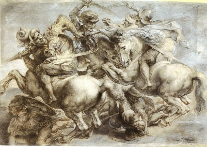
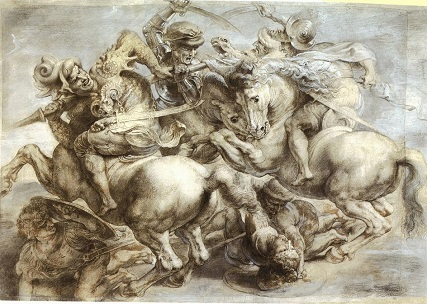

Графика
 

Графика – изображение на плоскости при помощи линий, штриха, контура, пятна и тона. Графику называют искусством черного и белого. Однако к графике относятся и многоцветные произведения, выполненные на бумаге: цветные гравюры, рисунки цветными карандашами, сангиной пастелью, акварелью.
Графика — термин, происходящий от древнегреческого слова «графо», что в переводе означает «писать, чертить, царапать».
Графика является наиболее древней и традиционным видом изобразительного искусства, основой которого являются линии и силуэты. Для неё характерны лаконичность художественной манеры и ёмкость образов.
Классификация по способу создания изображения
- рисовальная;
- печатная;
- компьютерная.
Классификация по функциям графических работ
- станковая;
- станковый рисунок;
- эстамп/гравюра;
- акварельные работы;
- книжная (создание иллюстраций, оформление обложек, форзацев, эрзацев и шмуцтитулов, разработка шрифтового рисунка, рисование буквиц, виньеток);
- газетно-журнальная (иллюстрирование, оформление печатного издания, конструирование макетов, рисование карикатур);
- прикладная (разработка логотипов и товарных ярлыков, эскизов почтовых марок, макетор рекламных изданий, вывесок);
- рекламная;
- промышленная;
- плакатная;
- графика письма;
- компьютерная.
Известные художники-графисты
- Альбехт Дюрер: "Рыцарь, смерть и дьявол", "Меланхолия";
- Леонардо да Винчи: "Туринский автопортрет", "Битва при Ангиари", "Виртувианский человек";
- Утамаро Китагава;
- Утагава Хиросигэ;
- Рембрандт Харменс ван Рейн;
- Франсиско Гойя: "Капричос";
- Гюстав Доре;
- Микеланджело Буонарроти.